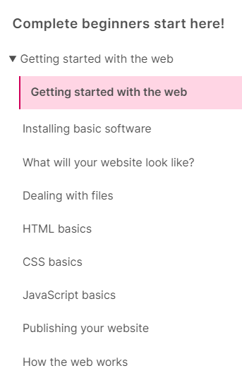

The Course Outline.
Welcome to COMP.5204 Enterprise.
Today we will cover a few essentials about the course.
You absolutely must know where to find the course outline and the assessment docs in the MS Teams/Files/Class Materials folder.
Create a link to it, don't copy it and miss out on updates. There is no Moodle page for this course.
How many weeks are in the course?
This semester what is the course structured on?
How many weeks do we have for the Getting Started With the Web section?
How long do we have for our HTML intro?
How many weeks for CSS?
How many weeks for Databases with Access?
How about the intro to Java Script?
The Assessments-
How many are there?
How much are they worth?
Where is the info about them? (Challenge: recreate the assessments table here using HTML. We will come back to this.)
Important Resources
| MDN Web Docs - This semester our course follows this | JS Fiddle - an online Editor | VS Code - a free IDE |
Can you find the Live Server Extension in VS Code?
We do not have time to cover every tag, or CSS structure in class, you are scheduled for 5 hours of student directed time per week. You need to use this to get the most from the course. Here is a list of essential resources
Jen Simmons LinkedIn Learning
You can also access via Moodle or the hub.
| W3.org | W3 Schools | Free Code Camp | Kevin Powell - My Youtube current favourite Web Dev educator |

Week 1
Learning Objectives
(Remember to open the folder in VS Code not the file).
This semester we will follow MDN Learn Web Development.
It starts with an introduction to each of the three key web technologies, HTML, CSS and Javascript. It then proceeds with a deeper dive into each of these.
If you haven't done any programming or development before you are going to meet 3 languages in 2 weeks! Don't panic there will be a deep dive into each later.
Just try to get a feel for the overview. HTML for content, CSS for style and JS to do stuff.